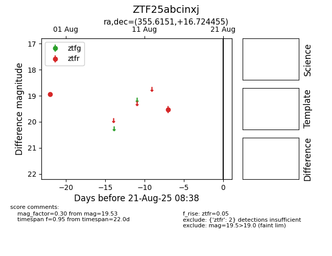

Target ZTF25abcinxj at 2025-08-21 08:38, see:
FINK: fink-portal.org/ZTF25abcinxj
Lasair: lasair-ztf.lsst.ac.uk/objects/ZTF25abcinxj
ALeRCE: alerce.online/object/ZTF25abcinxj
alt names
ZTF25abcinxj (ztf,alerce)
coordinates:
equatorial (ra, dec) = (355.6151,+16.72445)
galactic (l, b) = (100.0646,-43.06358)
photometry
last ztfr=19.53
2 ztfr detections
